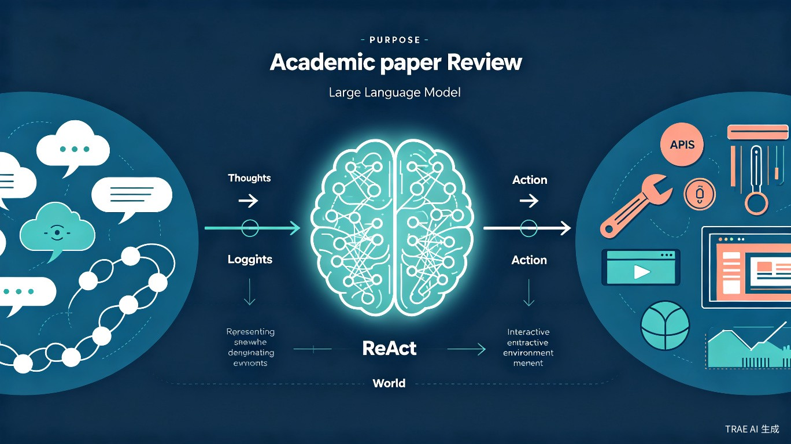

让大语言模型同时「思考」与「行动」—— 推理与行动的协同范式
近年来，大语言模型（LLMs）在两大领域展现出惊人能力，但这两条路线长期以来是相互独立的：
通过链式思维提示（Chain-of-Thought, CoT），模型可以逐步推导出答案。例如解数学题时，模型会写出中间步骤。
局限：推理是"静态黑盒"——模型只依赖内部知识，无法与外部世界交互，容易产生事实幻觉。
通过生成动作计划，模型可以操控工具、浏览网页、与环境交互。例如 WebGPT、SayCan 等工作。
局限：缺乏高层推理能力，无法制定和调整计划，容易在复杂任务中迷失方向。
ReAct 的灵感来源于人类认知科学。心理学家发现，人类在执行任务时会自然地进行"内心独白"（inner speech）：
这种推理与行动的紧密协同，使人类能够快速学习新任务，并在不确定环境中做出稳健决策。ReAct 正是要将这种能力赋予大语言模型。
ReAct 将模型的动作空间从原来的 A 扩展为 Â = A ∪ L，其中 L 是自然语言空间。模型可以生成两种输出：
Thought（思考）不影响外部环境，但会更新模型的上下文记忆，帮助其：
Action（行动）则与外部环境交互（如调用 API、执行操作），获取新的信息来支持推理。
对于问答、事实验证等任务，ReAct 采用密集推理——每一步行动前都伴随一次思考：
对于 ALFWorld、WebShop 等涉及大量动作的任务，ReAct 采用稀疏推理——让模型自行决定何时思考、何时行动：
ReAct 采用少样本提示（Few-shot Prompting），提示中包含人工编写的任务解决轨迹（包含 Thought、Action、Observation）。论文使用了 1-6 个示例，即可让模型学会 ReAct 的交互模式。
论文在四个不同类型的基准上评估了 ReAct：
| 基准 | 类型 | 核心挑战 | 动作空间 |
|---|---|---|---|
| HotpotQA | 多跳问答 | 需推理多个维基百科段落 | search / lookup / finish |
| FEVER | 事实验证 | 判断声明真伪 | search / lookup / finish |
| ALFWorld | 文本游戏 | 在虚拟家庭中完成家务 | go / take / use / put 等 |
| WebShop | 网页购物 | 根据需求在模拟电商网站购物 | search / click / buy 等 |
在 HotpotQA 和 FEVER 上，ReAct 与纯推理（CoT）和纯行动（Act-only）方法进行了对比：
CoT 依赖模型内部知识，容易产生事实幻觉（hallucination）。ReAct 通过与 Wikipedia API 交互，用外部事实纠正内部错误。
CoT 一旦在某步出错，错误会沿推理链传播。ReAct 通过行动获取新观察，及时发现并修正错误。
最佳策略：ReAct + CoT 的组合——先用 CoT 进行内部推理，当需要外部信息时切换到 ReAct 模式，兼顾效率与准确性。
这是 ReAct 最惊艳的结果——仅用 1-2 个少样本示例，就超越了经过数千至数十万样本训练的强化学习方法：
论文通过系统消融验证了推理与行动的协同必要性：
推理轨迹（Thought）完全透明，人类可以清楚地看到模型"在想什么"，理解其决策依据。
当模型出错时，可以通过检查 Thought 定位问题根源——是推理错误还是行动错误。
人类可以实时编辑模型的 Thought，直接纠正其推理过程，实现人在回路（Human-in-the-loop）控制。
同一框架适用于问答、验证、游戏、购物等完全不同类型的任务，无需为每个任务重新设计架构。
论文还探索了 ReAct 的微调潜力，发现：
这表明 ReAct 不仅是一种提示技术，更是一种有潜力的训练范式。
ReAct 发表于 ICLR 2023 并获得 Notable Top 5% 荣誉，已成为 LLM Agent 领域的奠基性工作之一。它启发了后续大量研究：
ReAct 是一项简洁而深刻的研究。它没有引入复杂的模型架构或训练方法，而是提出了一个优雅的范式转变：让大语言模型在生成任务动作的同时，也生成自然语言的推理轨迹。
这一简单的改变带来了多重收益：
ReAct 的成功提醒我们：有时候，最好的创新不是添加更多复杂度，而是找到正确的视角来重新组织已有的能力。将人类的"内心独白"机制赋予 AI，正是这样一个视角。